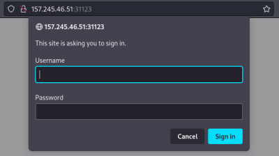
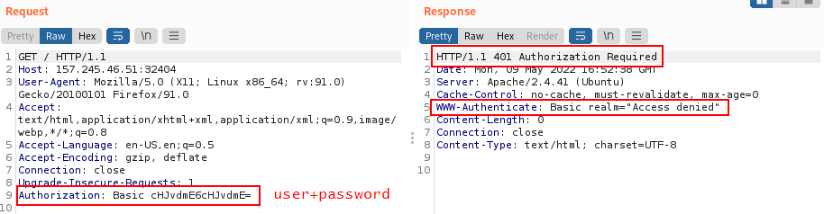
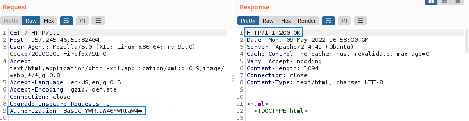

Basic HTTP Auth Brute Forcing
'Basic' Authentication scheme
(
https://tools.ietf.org/html/rfc7617)
Old and very simply to implement
The HTTP specification provides two parallel authentication mechanisms:
1.
Basic HTTP AUTH is used to authenticate the user to the HTTP server. It uses user ID and password for authentication
1) The client sends a request without authentication information with its first request.
2) The server's response contains the WWW-Authenticate header field,
▪ which requests the client to provide the credentials
▪ This header field also defines details of how the authentication has to take place
▪ In this response, the server transmits the so-called realm, a character string that tells the client who is requesting the data.
3) The client uses the Base64 method for encoding the identifier and password.
▪ This encoded character string is constructed by concatenating the username and password, and encoding it in Base64
▪ This encoded character string is transmitted to the server in the Authorization header field
▪ This token is stored and managed by the browser, which automatically adds it to the Authorization header of every subsequent request as follows:
 Failed Login  Successful Login  For a number of reasons, this is generally not considered a secure authentication method. Firstly, it involves repeatedly sending the user's login credentials with every request. Unless the website also implements HSTS, user credentials are open to being captured in a man-in-the-middle attack.
2.
Proxy Server Authentication is used to authenticate the user to an intermediate proxy server.
These two mechanisms work very similarly as they use requests, response status codes, and response headers. However, there are differences in the status codes and header names used.
Hydra Module For Basic HTTP authenticationhttp[s]-{head|get|post}
Bibliography:
https://portswigger.net/web-security/authentication/password-based